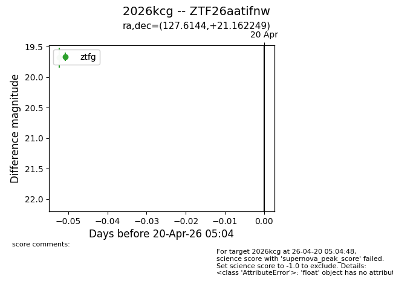
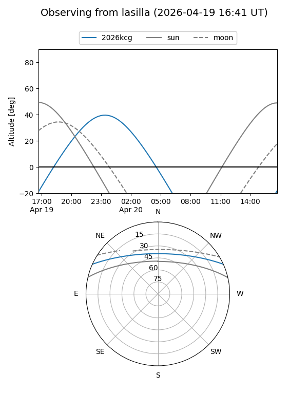
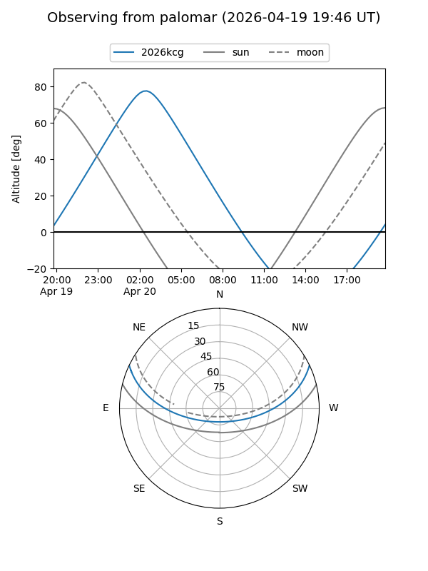
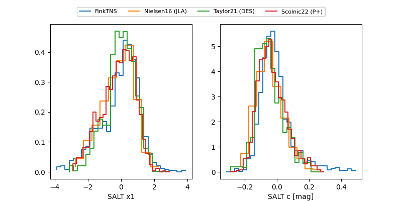

2026kcg
Target 2026kcg at 2026-04-20 05:14
Aliases and brokers:
FINK: link
Lasair: link
ALeRCE: link
TNS: link
YSE: link
alt names
ZTF26aatifnw (ztf,fink_ztf)
2026kcg (tns,yse)
Coordinates:
equatorial (ra, dec) = 127.6144,+21.16225
equatorial (HMS+DMS) = 08:30:27.45,+21:09:44.10
galactic (l, b) = (203.3321,+30.80740)
Flags:
Photometry:
last ztfg=19.68
1 ztfg detections
Lightcurve

Visibility


Additional plots
